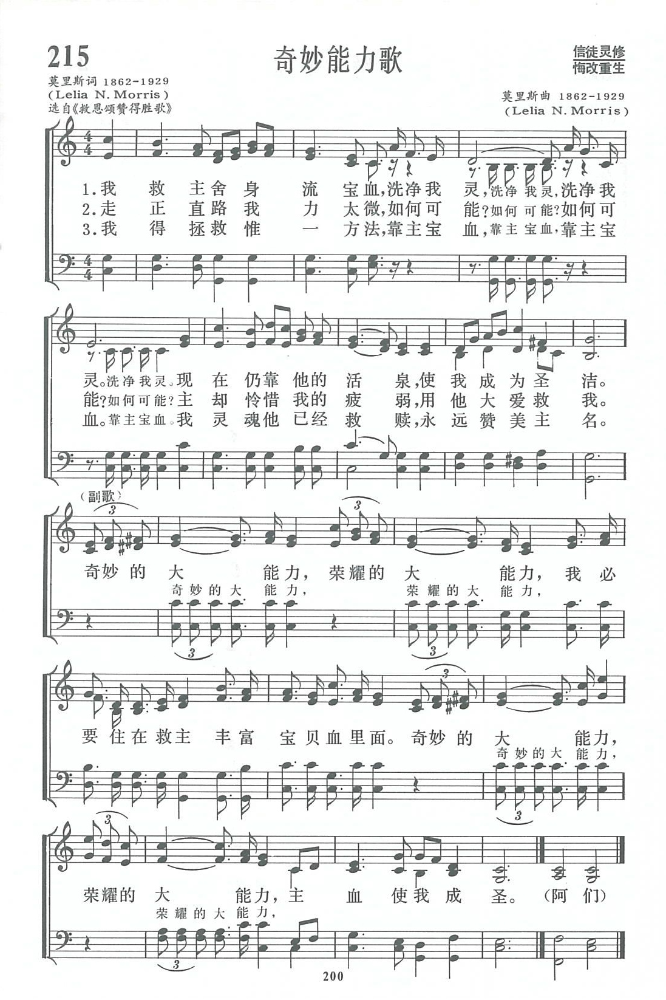

|
|
|
|
1 It was the Saviour’s precious blood Refrain: 2 No power have I my feet to keep 3 I cannot tell how I am saved 4 With jealous care and watchful eye |
讚美詩(新編) |
|
https://www.zanmeishige.com/tab/13888.html?songbook=1&index=215

|
|
|
|
|


https://youtu.be/emZhN0BffyA
| Text: | Keeping Power |
| Author: | Mrs. C. H. M. |
| Tune: | [It was the Savior's precious blood] |
| Composer: | Mrs. C. H. Morris |
| Short Name: | Mrs. C. H. Morris |
| Full Name: | Morris, C. H., Mrs. 1862-1929 |
| Birth Year: | 1862 |
| Death Year: | 1929 |
Lelia (Mrs. C.H.) Morris (1862-1929)

was born in Pennsville, Morgan County, Ohio. When her family moved to Malta on the Muskingum River she and her sister and mother had a millinery shop in McConnelsville. She and her husband Charles H. Morris were active in the Methodist Episcopal Church and at the camp meetings in Sebring and Mt. Vernon. She wrote hymns as she did her housework. Although she became blind at age 52 she continued to write hymns on a 28-foot long blackboard that her family had built for her. She is said to have written 1000 texts and many tunes including "Sweeter as the years go by."
Mary Louise VanDyke
第215首 奇妙能力歌 WONDERFUL KEEPING POWER _莫里斯夫人
经文：“神能照看运行在我们心里的大力，充充足足地成就一切，超过我们所求所想的”(弗3：2O)。
这首《奇妙能力歌》的词和曲都是美国女信徒莫里斯夫人(事略参阅第91首)所作。有一次她参加了以追求圣洁为主题的聚会，称之为“圣洁营”。
她的这首诗所强调的也是追求圣洁，如副歌“主血使我成圣”。像她所写的其它圣诗一样，《奇妙能力歌》在福音派的信徒中很有影响。
这首诗
第一节叙述了一个人不但得救时要靠主耶稣舍身流血，并且在得救后的道路上，也要时刻靠主宝血成为圣洁；
第二节进一步说到靠自己不可能走正直的道路，因为人太卑微软弱，惟有靠主大爱的扶持；
最后介绍了一个人要蒙恩得救，惟一的方法是靠赖主的宝血。
副歌则是三节正歌的总结。
哥林多后书第4章第7节说：“我们有这宝贝放在瓦器里，要显明这莫大的能力，是出于神，不是出于我们。”这奇妙、荣耀的大能力使我们处在任何境遇中都能不被困住，不致失望。
https://www.xueshengshi.com/?p=6827